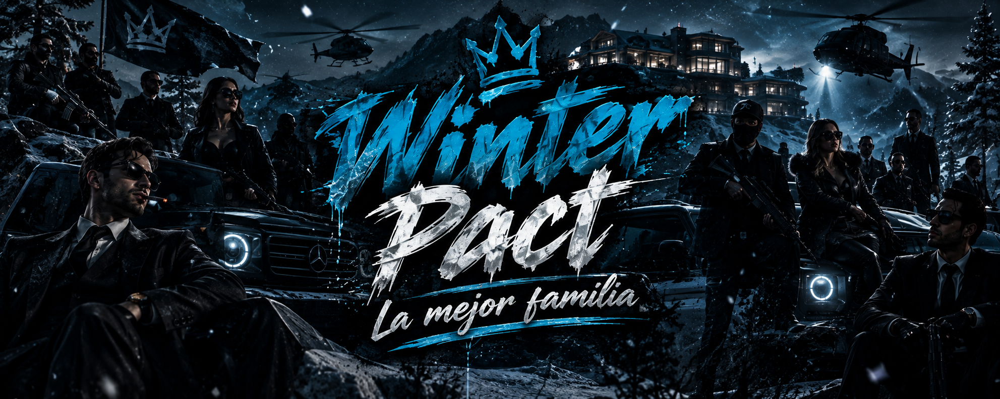

Donde la lealtad
vale más que el dinero.
Winter [ Pact ] es una facción que representa unión, honor y responsabilidad, Winter [ Pact ] no solo es una simple facción, es mas que eso, es una familia donde el compromiso y la valentía se manifiestan en cada acción.
Aquí cada decisión tiene consecuencias. Cada ascenso se gana. Y cada miembro protege el nombre y el honor que nuestra facción representa.

← Volver al inicio